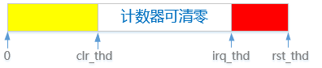

Watchdog 使用指南
看门狗 (Watchdog, WDT) 定时器可以监控系统的健康状态，并在系统无法正常使用时，强制复位系统。看门狗内部有一个递减计数器，在系统正常运行期间，通过重置计数可以保证看门狗模块不触发复位。
术语 |
定义 |
注释说明 |
|---|---|---|
WDT |
Watchdog，下文简称 wdt |
看门狗 |
clr_thd |
Clear threshold |
清看门狗的计数时，当前计数必须要满足此门限 |
irq_thd |
IRQ threshold |
看门狗产生中断的计数值 |
rst_thd |
Reset threshold |
看门狗触发系统重启的门限值 |
ping |
- |
指将看门狗的计时器清零，使其重新计数，俗称“喂狗” |
Watchdog 功能说明
Watchdog V1.0 提供了下列系统监控和保护功能：
-
中断信号通知：在复位系统前先（时刻可配置），Watchdog 能够发出一个中断信号，通知系统做复位前的准备工作。
中断信号通知可允许系统在被强制复位之前执行一些关键操作，例如保存当前状态或清理资源。
-
计数器清零限制：仅在当前计数值满足某个门限（可配置）值时才能执行清零操作。
计数器清零限制有助于防止误操作导致的不必要复位，提高系统的可靠性。

图 1. Watchdog 清零的窗口示意 -
多通道配置：支持预先加载四个 Watchdog 的配置，运行时可一键切换。软件可以理解为多通道，目前只开放一个通道，即通道 0。
多通道配置适用于需要在不同工作模式间灵活切换的系统，增强了系统的适应性和灵活性。
-
写失效保护机制：当配置了写失效，除了 OP 和 IRQ_STA 寄存器可读以外，其它寄存器均不可读。
写失效保护适用于上述所有功能操作，可防止意外或恶意的软件修改 Watchdog 配置，保证系统的安全稳定运行。

图 2. Watchdog 写保护的状态迁移 Watchdog 写保护的状态迁移展示了不同状态下可进行的操作，以及如何进入和退出状态：
-
- 写允许
-
普通状态，无任何权限限制，随时可重新配置计数器。
-
- 写保护
-
如果要重新配置 Watchdog 计时器，需先写入操作码 OP_WR_EN 解锁（进入“写允许”状态）。
-
- 写失效
-
此时 Watchdog 进入只读状态，只有 OP 寄存器可写（用于喂狗、切换通道）。从图中可以看到此状态不可逆，如果要修改 Watchdog 配置，必须要 reset 系统才可以。
-
-
支持操作码 (Operate Code)：支持多种操作码，如计时器清零、通道切换、写使能等，以实现更精细的控制。